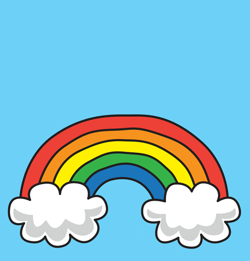

Conclusion
Bravo, vous avez terminé ce TP consacré aux données manquantes !
Pour toute analyse avec des données manquantes, gardez en tête la démarche suivie :
- Décrire les données manquantes : combien, sur quelles variables, selon quels profils.
- Explorer le lien entre la non-réponse et les variables observées, pour juger de la plausibilité des hypothèses MCAR et MAR (sans oublier que l’hypothèse MNAR ne peut jamais être exclue).
- Choisir une méthode adaptée : analyse sur cas complets, IPCW ou imputation multiple, en vérifiant à chaque fois les points de contrôle (poids, convergence, plausibilité des imputations).
- Confronter les résultats des différentes approches, et compléter si besoin par une analyse de sensibilité.
Pour aller plus loin, le livre de Stef van Buuren, auteur du package mice, est disponible gratuitement en ligne : Flexible Imputation of Missing Data.
